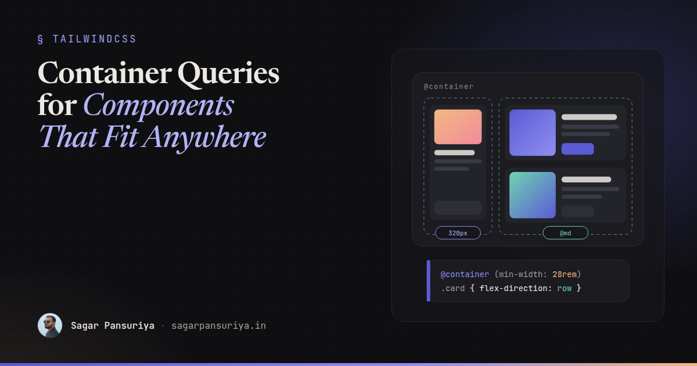
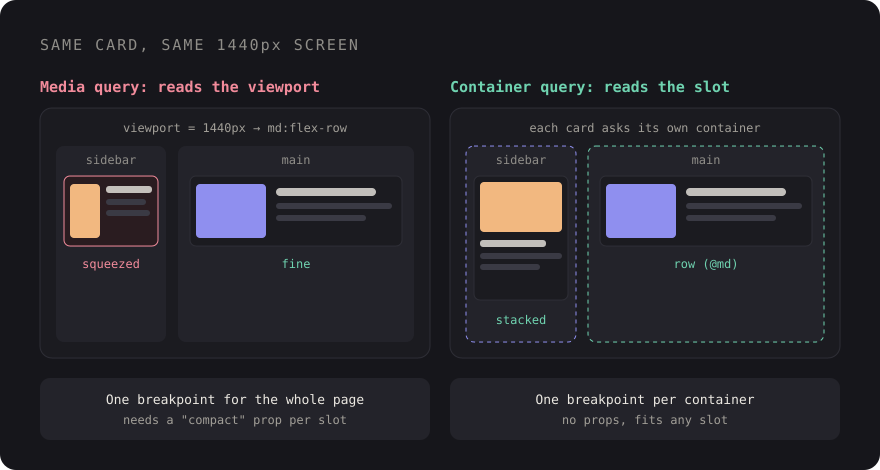

Container Queries in Real Component Libraries: Components That Fit Anywhere


You've probably built this card. Image on the left, title and meta on the right, a button at
the bottom. It looks great in the main column. Then someone drops it into the sidebar, and
on a 1440px screen the sidebar is 320px wide. Your md:flex-row kicks in because
the viewport is wide, and the card squeezes a thumbnail and three lines of text into
a space that can barely hold one.
The usual fix is a prop: variant="compact". Then another for the dashboard grid,
another for the modal. After a year your card has five layout variants, and every new
placement means a new one. The card doesn't actually care about the screen. It cares about
the space it was given.
That's the problem container queries solve, and they've been supported in every major browser since early 2023. This post covers how they work, how Tailwind v4 exposes them, and the patterns I reach for in real component libraries.
Why media queries fail reusable components
A media query answers one question: how big is the viewport? That's the right question for page-level layout, like whether the sidebar is visible or how many columns the grid has. It's the wrong question for a component, because a component doesn't know where it will be rendered.
The same card might sit in:
- a 1200px main column on desktop,
- a 320px sidebar on the same desktop,
- a three-column dashboard grid where each cell is 380px,
- a full-width mobile layout at 390px.
Two of those are "desktop", two are roughly the same width, and a viewport breakpoint treats them completely differently. With container queries, the component asks its container how wide it is instead, so the 320px sidebar and the 390px phone get the same compact layout without anyone passing a prop.

The CSS: container-type and @container
Two pieces. First, mark an element as a query container. Second, write rules that respond to that container's size.
.card-slot {
container-type: inline-size;
}
.card {
display: grid;
gap: 1rem;
}
@container (min-width: 28rem) {
.card {
grid-template-columns: 10rem 1fr;
}
}container-type: inline-size tells the browser this element's width can be
queried. The @container rule then matches against the nearest ancestor
that is a container. Note the word ancestor: an element can't query itself, which is why the
container is usually a wrapper around the component, not the component root.
The one gotcha: inline-size containment
Making something a size container applies size containment on the inline axis. In plain terms, the container's width can no longer depend on its children. For block elements that stretch to fill their parent, you'll never notice. But if the container is a flex item that was sizing itself to its content, or an inline-block, it can collapse to zero width.
The fix is to give it a width from the outside: flex: 1,
width: 100%, or a grid track. If a component suddenly vanishes after you add
container-type, this is almost always why.
Named containers
Nested containers are common: a widget inside a dashboard cell inside a main column. By
default @container matches the nearest container, which may not be the one you
meant. Name them to be explicit:
.layout-main {
container: main / inline-size; /* shorthand: name / type */
}
.widget-cell {
container: widget / inline-size;
}
/* Only responds to the main column, however deeply nested */
@container main (min-width: 60rem) {
.page-toolbar { flex-direction: row; }
}
@container widget (min-width: 24rem) {
.stat { font-size: 2rem; }
}My rule of thumb in a component library: layout regions get named containers
(main, sidebar, panel), and components use unnamed
queries so they respond to whatever slot they're dropped into.
Container query units: cqi and friends
Container queries come with length units relative to the container, the same way
vw is relative to the viewport. The one I use most is cqi: 1% of the
container's inline size. There's also cqb for the block axis and
cqw, cqh, cqmin, cqmax.
Combined with clamp(), they give you fluid typography and spacing that scale
with the component, not the screen:
.stat-value {
font-size: clamp(1.5rem, 8cqi, 3rem);
}
.card {
padding: clamp(0.75rem, 4cqi, 2rem);
}A KPI tile in a narrow column gets a smaller number, the same tile in a wide hero gets a big one, and there's no breakpoint in sight. One detail worth knowing: if there's no eligible container, these units fall back to the small viewport units, so they won't break, but they won't do what you expect either.
Container queries in Tailwind v4
In Tailwind v3 you needed the @tailwindcss/container-queries plugin. In v4 it's
built in. Add @container to the parent, then use the @-prefixed
variants on children:
<div class="@container">
<article class="grid gap-4 @md:grid-cols-[10rem_1fr]">
<img src="{{ $post->thumb }}" class="aspect-video w-full rounded-lg object-cover @md:aspect-square" alt="">
<div>
<h3 class="text-lg font-semibold @lg:text-xl">{{ $post->title }}</h3>
<p class="hidden text-sm text-zinc-500 @sm:block">{{ $post->excerpt }}</p>
</div>
</article>
</div>A few things that trip people up:
- The sizes are not the viewport breakpoints.
@mdis a container width of 28rem (448px), not 768px. The container scale is smaller because components are smaller than screens. Check the scale in the Tailwind docs before assuming. - Max-width variants exist too.
@max-md:applies below the size, and you can stack them for ranges like@sm:@max-lg:. - Arbitrary values work.
@min-[30rem]:when the scale doesn't fit. - Named containers use a slash.
@container/mainon the parent,@lg/main:flex-rowon the child.
Tailwind's @container class sets container-type: inline-size, so the
containment gotcha above applies. In a flex row, pair it with flex-1 or
w-full.
Pattern 1: the card that adapts in sidebar vs main
This is the canonical case, and in Blade the cleanest approach is to make the component own its own container wrapper. Then nobody using it has to remember:
{{-- resources/views/components/post-card.blade.php --}}
@props(['post'])
<div {{ $attributes->class('@container') }}>
<article class="flex flex-col gap-3 rounded-xl border border-zinc-200 p-4 @md:flex-row @md:items-center">
<img src="{{ $post->thumb }}" alt="" class="w-full rounded-lg @md:w-40">
<div class="min-w-0">
<h3 class="truncate font-semibold">{{ $post->title }}</h3>
<p class="line-clamp-2 text-sm text-zinc-600 @lg:line-clamp-3">{{ $post->excerpt }}</p>
</div>
</article>
</div>Now <x-post-card> works in the sidebar, the main feed, a two-up grid and a
modal, with zero variant props. The variant prop goes back to meaning what it
should: a visual style, not a guess about available width.
Pattern 2: responsive tables
Tables are where viewport breakpoints hurt most. A data table inside a slide-over panel is effectively on a phone, even on a 27-inch monitor. With a container query, the table can switch to a stacked layout based on the space it actually has:
.table-wrap { container-type: inline-size; }
@container (max-width: 36rem) {
.data-table thead { display: none; }
.data-table tr { display: grid; gap: 0.25rem; padding: 0.75rem 0; }
.data-table td { display: grid; grid-template-columns: 8rem 1fr; }
.data-table td::before {
content: attr(data-label);
font-weight: 600;
}
}Put data-label="Status" on each cell and the same markup renders as a table in
the main area and as labelled cards in the panel. One caveat: changing
display on table elements can affect how screen readers announce them, so test
the stacked version with a screen reader, and consider adding explicit ARIA table roles if
it matters for your users.
Pattern 3: dashboard widgets
Dashboards are the best argument for container queries I know. Users resize panels, grids reflow, and a chart widget might be 280px or 900px wide depending on the layout. Each widget decides for itself what to show:
<div class="@container rounded-xl bg-white p-4">
<div class="flex items-baseline justify-between">
<p class="text-sm text-zinc-500">Revenue</p>
<span class="hidden text-xs text-emerald-600 @xs:inline">+12% vs last month</span>
</div>
<p class="text-[clamp(1.5rem,10cqi,3rem)] font-bold">₹4.2L</p>
<div class="hidden h-32 @sm:block">{{-- sparkline chart --}}</div>
<table class="hidden @2xl:table">{{-- breakdown by channel --}}</table>
</div>Small: just the number. Medium: number plus sparkline. Wide: the full breakdown. This is progressive disclosure by available space, and the widget stays a single component.
A teaser: style queries
Size isn't the only thing you can query. Style queries let a component respond to a custom property set on its container:
.theme-dark-panel { --surface: dark; }
@container style(--surface: dark) {
.card { background: #1b1b20; color: #ece9e2; }
}This is a neat way to pass "context" down without prop drilling or extra classes. Support for custom-property style queries is newer and less uniform than size queries, so check current browser support on MDN before relying on it, and treat it as an enhancement rather than a requirement.
When to still use media queries
Container queries don't replace media queries. They split the job:
| Question | Tool |
|---|---|
| Is the sidebar visible? How many page columns? | Media query (md:, lg:) |
| How should this card lay itself out? | Container query (@md:) |
| Does the user prefer reduced motion or dark mode? | Media query |
| Is this pointer coarse or fine? | Media query |
| How big should this stat number be? | cqi with clamp() |
Page shell responds to the viewport. Everything inside it responds to its container.
A checklist for your component library
- Every reusable component that changes layout ships its own
@containerwrapper, so consumers don't have to add one. - Layout regions get named containers; components use unnamed queries.
- Watch for collapsing containers in flex rows. Give them
flex-1or a width. - Use the container scale, not viewport breakpoints, inside components.
- Replace width-based variant props (
compact,sidebar) with container queries. - Use
cqiwithclamp()for type and spacing that scale with the slot. - Keep media queries for the page shell and user preferences.
Go back to the card from the start. With a container wrapper and two @md:
classes, it just fits the sidebar. No new prop, and no ticket next month when someone puts
it in a modal.
Discussion